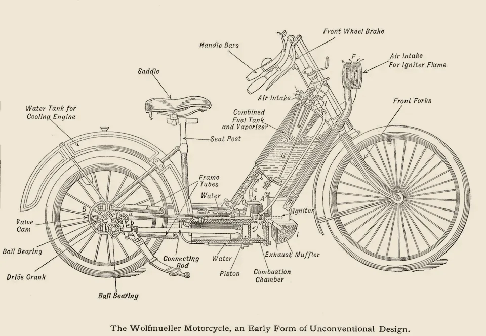

· Edición 32 · 6 min de lectura
Seis de cada diez muertos en las vías iban en moto, y mejores frenos, cascos y menos velocidad ya han salvado vidas
Revisada el · 1 corrección posteriores a la publicación

Dibujo de Victor Wilfred Pagé, 1914 · Dominio público, vía Wikimedia Commons
Seis de cada diez muertos en las vías iban en moto, y mejores frenos, cascos y menos velocidad ya han salvado vidas
Ver todo el tema, de principio a fin →
En pocas palabras. En Colombia mueren más de 8.000 personas al año en las vías, y seis de cada diez iban en moto: casi el doble de la proporción mundial. Hay salida, y ya se probó: frenos que no traban la rueda, cascos y menos velocidad han salvado vidas en Estados Unidos, Vietnam y Bogotá. Una norma que exige mejores frenos en las motos nuevas debía regir desde ayer.
El dato curioso. El cinturón de seguridad de tres puntos, el que cruza el pecho y la cadera, lo perfeccionó en 1959 Nils Bohlin, un ingeniero sueco de Volvo. La empresa lo patentó y luego hizo algo poco común: dejó la patente abierta para que cualquier fabricante lo usara sin pagar. Volvo calcula que ese cinturón ha salvado al menos un millón de vidas; es su estimación, no un conteo. El invento más útil de la seguridad vial terminó siendo, además, un regalo.
Qué pasó. Para mucha gente, la moto es el bus que no pasa: lleva al trabajo, reparte domicilios y cuesta menos que el pasaje diario. Es el medio de transporte que más crece en la región, según el Banco Interamericano de Desarrollo (BID), y las muertes crecieron con ella.
- En Colombia. En 2024 murieron 8.271 personas en las vías; 5.096 iban en moto, según la Agencia Nacional de Seguridad Vial (ANSV).
- Frente al mundo. Según un análisis de The Economist, en el mundo los motociclistas son cerca de un tercio de los muertos en las vías; en Colombia, 62 de cada 100.
- Este año. Entre enero y marzo de 2026 murieron 2.244 personas, 20% más que un año antes: unas 25 al día. Dos de cada tres iban en moto. A finales de septiembre, la Procuraduría abrió una revisión de seis meses sobre la seguridad de los motociclistas.
Cómo llegamos aquí.
- Más motos que reglas. En América Latina, de 2010 a 2024, las motos se triplicaron y las muertes de motociclistas casi se duplicaron, según el BID.
- La regla que se aplaza. En 2022, el Ministerio de Transporte exigió a las motos nuevas frenos combinados o antibloqueo desde octubre de 2025. A pocos días de la fecha, la aplazó un año para revisar «condiciones técnicas, institucionales y comerciales». Debía regir el 13 de octubre de 2026; al cierre no encontramos confirmación de que rija ni noticia de otra prórroga.
Ya pasó antes. En mayo de 1935, T. E. Lawrence, el célebre «Lawrence de Arabia», murió días después de caer de su moto en Inglaterra, por una lesión en la cabeza. Uno de sus médicos, el neurocirujano Hugh Cairns, concluyó que un casco quizá lo habría salvado. En la Segunda Guerra Mundial mostró que muchos mensajeros del Ejército en moto morían por golpes en la cabeza evitables, y el casco se extendió entre militares y civiles. La ley que lo hizo obligatorio para todos en el Reino Unido llegó 32 años después.
El patrón. Entre la prueba y la norma suele pasar demasiado tiempo, y en seguridad vial cada año de espera se cuenta en vidas. Cuando la evidencia es sólida y la medida es conocida, aplazar también es decidir.
¿Hay salida? Sí. Tres piezas con evidencia:
- Frenos que no se traban. El ABS evita que la rueda se bloquee al frenar; el CBS reparte la frenada entre las dos ruedas. Un estudio del IIHS, un instituto de seguridad vial de Estados Unidos, comparó 65 modelos de moto entre 2013 y 2019: las que tenían ABS estuvieron en 22% menos choques mortales.
- Cascos que se usan. Vietnam, un país de motos, hizo obligatorio el casco en diciembre de 2007. En 20 hospitales, en los tres meses siguientes, el riesgo de muerte en las vías bajó 18%; en el distrito de Cu Chi, las lesiones de cabeza cayeron a cerca de un tercio. Una revisión Cochrane estima que el casco reduce el riesgo de morir en 42%.
- Menos velocidad, en casa. Desde 2018, Bogotá bajó a 50 kilómetros por hora el límite en sus grandes avenidas. En el primer año, las muertes en esos corredores bajaron 26% frente a 2015-2018, y 26% entre motociclistas, según la Secretaría de Movilidad. En 2025, la ciudad decidió mantener el límite.
Pero ojo.
- Solo para motos nuevas. La norma no toca las que ya circulan, y en 2023 el 68% de las nuevas ya traía ABS o CBS, según la ANDI. Su efecto será gradual.
- El precio pesa. Unos frenos mejores encarecen la moto, y la mayoría de los compradores vive en estratos 1, 2 y 3.
- Ninguna medida basta sola. Las cifras de Bogotá comparan antes y después, sin grupo de control, y aun con el límite sus muertes viales subieron 21% a comienzos de 2026.
Qué hacer con esto
Para ir pensando. Quien vaya a comprar moto, para trabajar o para un hijo, puede preguntar si trae ABS o CBS y comparar la diferencia de precio con lo que protege.
Cómo prepararse. Lo que más protege no depende de la norma: un casco certificado, bien ajustado y abrochado, y respetar el límite de velocidad.
Ojo con el cuento. «La moto ya tiene frenos de disco» no es lo mismo que ABS: un disco también se puede trabar. Y «la norma ya rige» no cambia las motos que andan en la calle: aplica a las nuevas.
Qué podríamos exigir. Que el Ministerio diga en público si el reglamento rige y qué modelos cumplen, y más corredores a 50 kilómetros por hora en las ciudades con más muertes.
Dos lecturas
Exigir los frenos ya. La evidencia es amplia, la mayoría de las motos nuevas ya cumple y la norma se conoce desde 2022. Cada año de prórroga deja salir a la calle motos sin una protección que ya existe.
Darle tiempo a la transición. La moto es la herramienta de trabajo de millones de hogares pobres. Si sube de precio o faltan laboratorios para certificar los frenos, la regla puede empujar a la gente hacia motos usadas, sin ningún sistema.
Quién decide y cuándo
Quién decide. El Ministerio de Transporte, con la ANSV, decide si el reglamento de frenos rige o se aplaza otra vez. Las alcaldías fijan los límites de velocidad.
Cuándo. El reglamento debía regir el 13 de octubre de 2026. La revisión de la Procuraduría dura seis meses, hasta marzo o abril de 2027.
Cómo participar. Con un derecho de petición al Ministerio se puede preguntar si la norma ya rige y qué modelos la cumplen. Red PaPaz, una red de padres de familia, ya presentó uno sobre esta norma en 2025.
Seguimiento de la decisión
Aplazada · sin fecha fija
Ministerio de Transporte, con la Agencia Nacional de Seguridad Vial: Aplicar sin una nueva prórroga el reglamento técnico que exige frenos combinados (CBS) o antibloqueo (ABS) en las motos nuevas que se vendan en Colombia.
Prometido desde · 2 plazos incumplidos
La Resolución 20223040062115 de 2022 fijó el 13 de octubre de 2025; la Resolución 20253040041245, del 9 de octubre de 2025, lo aplazó al 13 de octubre de 2026. El 7 de julio de 2026, el Ministerio lo aplazó otra vez, un año: la nueva fecha cae entre agosto y octubre de 2027; no encontramos el día exacto para las motos.
La paradoja del día
La norma que exige frenos que no se traban lleva tres años frenada: se escribió en 2022, debía regir en 2025 y se aplazó a pocos días de empezar. Las motos no esperaron.
Para conversar
La pregunta. Si una moto con mejores frenos cuesta más, ¿quién debería pagar la diferencia: quien la compra, quien la fabrica o el Estado? ¿Y qué podríamos hacer para que la moto más segura sea también la más fácil de comprar?
Para leer más
Traffic: Why We Drive the Way We Do (and What It Says About Us), de Tom Vanderbilt (Knopf, 2008; en inglés; hay traducción al español, Tráfico). Un periodista explica por qué calculamos mal el riesgo al manejar y por qué algunas medidas de seguridad tienen efectos inesperados.
¿Le interesa ver las fuentes?
31 fuentes: 7 académicas, 3 oficiales, 5 de organizaciones, 14 de prensa, 2 de referencia.
- Prensa La República. Colombia casi duplica proporción mundial de muertes en moto, dijo The Economist
- Oficial Concejo de Bogotá. En los últimos 7 años, los lesionados por siniestros viales han disminuido en el país, pero las muertes han aumentado
- Prensa El Tiempo. Las alarmantes cifras de siniestros viales que dejó el primer trimestre del año: en Colombia, cada hora muere una persona en las vías
- Prensa Cambio. Muertes en siniestros viales en Colombia en lo que va de 2026: cifras, departamentos, afectados
- Organización Banco Interamericano de Desarrollo (blog de Transporte). Movilidad segura de motocicletas en América Latina y el Caribe: cinco claves para reducir riesgos y salvar vidas
- Académica Revista Panamericana de Salud Pública (2023), vía PMC. Mortality and disability-adjusted life years in motorcyclists in Latin America and the Caribbean during the first decade of action for road safety
- Prensa Asuntos Legales. Procuraduría General de la Nación pidió acciones ante mortalidad de motociclistas
- Prensa Radio Santa Fe. Procuraduría inicia actuación preventiva ante creciente accidentalidad y mortalidad de motociclistas
- Oficial Régimen Legal de Bogotá (Alcaldía de Bogotá). Resolución 20253040041245 de 2025 Ministerio de Transporte
- Prensa Infobae. Buenas noticias para los motociclistas: esta es la drástica reglamentación que fue aplazada hasta el 2026
- Prensa Valora Analitik. MinTransporte hizo cambio oficial de norma que regía para motocicletas: Definió nueva fecha
- Prensa Infobae. Qué viene tras el aplazamiento de la exigencia de frenos ABS y CBS en motos en Colombia: la Andi criticó la decisión
- Prensa La República. Las motos que les aplica nueva normativa de frenado representan 95% del mercado
- Prensa El Tiempo. ABS y CBS en motos: cómo funcionan y cuál es su importancia
- Organización Volvo Group. The three points that saved one million lives
- Oficial Oficina Sueca de Propiedad Intelectual (PRV). Life-saving invention
- Organización Royal College of Surgeons of England (blog de la biblioteca). Sir Hugh Cairns and the origins of the motorcycle helmet
- Académica Neurosurgery (Maartens, Wills y Adams, 2002), vía ResearchGate. Lawrence of Arabia, Sir Hugh Cairns, and the Origin of Motorcycle Helmets
- Académica PMC. Sir Hugh Cairns: The Neurosurgeon Who Introduced Crash Helmets
- Organización Insurance Institute for Highway Safety (IIHS). Largest study of its kind strengthens argument for motorcycle ABS
- Académica Traffic Injury Prevention (Teoh, 2022), vía IIHS. Motorcycle antilock braking systems and fatal crash rates: updated results
- Académica Traffic Injury Prevention (Passmore y otros, 2010), vía PubMed. Impact of mandatory motorcycle helmet wearing legislation on head injuries in Viet Nam: results of a preliminary analysis
- Académica Traffic Injury Prevention (2018), vía PubMed. Changes in motorcycle-related injuries and deaths after mandatory motorcycle helmet law in a district of Vietnam
- Académica Cochrane (Liu y otros, 2008). Helmets are shown to reduce motorcyclist head injury and death
- Prensa El Tiempo. Los dos nuevos corredores con velocidad límite de 50 km / h
- Prensa La FM. Bogotá no subirá el límite de velocidad: mantiene los 50 km/h tras reducir muertes en accidentes de tránsito
- Prensa El Tiempo. Muertes en siniestros viales en Bogotá: aumento del 21% en 2026
- Prensa Noticias RCN. Nueva ley para motos en Colombia: ¿Por qué los estratos 1, 2 y 3 serían los más afectados?
- Organización Red PaPaz. Derecho de petición Ministerio de Transporte
- Referencia Penguin Random House. Traffic: Why We Drive the Way We Do (and What It Says About Us), de Tom Vanderbilt
- Referencia Lecturalia. Tráfico, de Tom Vanderbilt
Glosario
- ABS (sistema antibloqueo de frenos): suelta y aprieta el freno muchas veces por segundo para que la rueda no se trabe y la moto no derrape.
- CBS (sistema de frenado combinado): al frenar con una palanca, reparte la fuerza entre la rueda de adelante y la de atrás.
- Reglamento técnico: norma obligatoria que fija cómo debe ser un producto para poder venderse en el país.
- ANSV (Agencia Nacional de Seguridad Vial): entidad del Gobierno que cuenta las muertes en las vías y orienta la política para reducirlas.
- Derecho de petición: solicitud que cualquier persona puede hacer a una entidad pública, que debe responder por escrito en un plazo fijado por la ley.
- Revisión Cochrane: estudio que reúne y compara de forma ordenada las investigaciones sobre una misma pregunta de salud.
Nota metodológica
Hicimos unas 60 búsquedas en español e inglés: barrido de Colombia, América Latina y el mundo del 12 al 14 de octubre, revisión de las decisiones abiertas y búsquedas dirigidas sobre las cifras de muertes en las vías, la norma de frenos y los estudios de ABS, cascos y velocidad. No pudimos abrir los documentos completos; trabajamos con resúmenes, fichas y resultados de búsqueda, y no les atribuimos más de lo que dicen. De 31 fuentes, 17 no son de prensa.
Es la primera vez que tratamos este tema. Como toca muertes, va sin humor; el dato curioso es el respiro.
Quedó sin verificar o con límites:
- No sabemos si el reglamento de frenos empezó a regir el 13 de octubre. Las fuentes sobre el aplazamiento son de 2025; no encontramos una resolución nueva ni una noticia que confirme su entrada en vigencia.
- Las cifras de 2026 son preliminares de la ANSV, citadas por la prensa. El total de 2024 (8.271) y los 5.096 motociclistas vienen del Concejo de Bogotá; otras fuentes dan 5.146 o 5.194 motociclistas, según el corte. «Unas 25 al día» es nuestra cuenta.
- La comparación con el mundo viene de un análisis de The Economist que no pudimos leer; la conocemos por La República.
- El estudio de ABS es de Estados Unidos, con motos más grandes que las comunes aquí; el IIHS es financiado por aseguradoras. Para el CBS encontramos evidencia más escasa.
- Lo de Vietnam viene de estudios de antes y después; el de Cu Chi lo leímos solo en su resumen. La revisión Cochrane reúne estudios de observación.
- Lo de Lawrence y Cairns viene de una reseña de 2002 en la revista Neurosurgery, del blog de la biblioteca del Real Colegio de Cirujanos de Inglaterra y de un artículo sobre Cairns; las cifras detalladas de su estudio de 1941 no las pudimos verificar y no las usamos.
- El 68% de motos nuevas con ABS o CBS en 2023 es de la ANDI, citada por La República; el peso de los estratos 1, 2 y 3 entre los compradores, de Noticias RCN.
Puntaje de impacto. Filtro primero (las cuatro condiciones de nudo) y luego puntaje de 1 a 3 en alcance, gravedad, duración, cercanía y decisión en curso; gravedad y cercanía valen doble (máximo 21). Para los temas del mundo, la cercanía se mide por el canal por el que llegan a Colombia.
| Tema | Alcance | Gravedad | Duración | Cercanía | Decisión | Total | Resultado |
|---|---|---|---|---|---|---|---|
| Motos y muertes en las vías | 3 | 3 | 2 | 3 | 2 | 19 | Elegido (edición 32) |
| Dengue | 2 | 3 | 1 | 3 | 1 | 16 | Sin decisión en curso |
| Ataque con drones en El Queremal | 2 | 3 | 2 | 3 | 1 | 17 | Tratado el 6 de octubre; sin novedad de fondo |
| Petrolero atacado en Ormuz (mundo; canal: combustible) | 3 | 2 | 1 | 2 | 1 | 14 | Canal ya contado (edición 25) |
| Proyecciones del FMI | - | - | - | - | - | - | No pasa el filtro: dato de coyuntura |
| Decreto de la protesta | - | - | - | - | - | - | Ya tratado (edición 28); va como actualización |
| Presupuesto de 2027 | - | - | - | - | - | - | Plenarias en curso |
Las muertes de motociclistas pasan las cuatro condiciones de nudo: se repiten (más de 5.000 al año y en aumento), tienen un mecanismo (más motos sin reglas a su ritmo y una norma de frenos que se aplaza), alguien lo puede cambiar (Ministerio de Transporte, ANSV y alcaldías) y el daño se mide (8.271 muertes en 2024 y 20% más en el primer trimestre de 2026). Ningún otro tema nuevo llegó a 17 y pasó el filtro sin haber sido tratado esta semana: hoy hay una sola edición.
Revisamos las decisiones con plazo en los próximos siete días. Decreto de la protesta (edición 28): se firmó el 13 de octubre; lo marcamos como tomado y agregamos una actualización. Presupuesto de 2027 (ediciones 3 y 22) y concesiones de agua de la CAR (edición 18): sin noticia de fondo; solo anotamos la revisión. Salario mínimo: agregamos una actualización a la edición 31.
El grabado salió de Wikimedia Commons: un dibujo técnico de la moto Hildebrand & Wolfmüller, de 1894, publicado en un manual de Victor W. Pagé de 1914, en dominio público. Como el tema toca muertes, elegimos una máquina y no una escena; tiene rotulado, además, el freno de la rueda delantera. Commons limitó varias búsquedas seguidas.
El libro no está en Santo & Seña: lo buscamos en su catálogo y no aparece. Autor, año y editorial los confirmamos en la ficha de Penguin Random House y en catálogos de bibliotecas.
Correcciones
Datos corregidos después de publicar; cada corrección lleva su fecha.
Corrección ·
Dijimos que la norma de frenos para motos nuevas debía regir desde el 13 de octubre de 2026 y que no encontrábamos noticia de una nueva prórroga. La había: el 7 de julio de 2026, el Ministerio de Transporte aplazó un año siete reglamentos técnicos, entre ellos el de frenos para motos; las nuevas fechas van de agosto a octubre de 2027 (El Universal, La Nación, Blu Radio). Lo contamos en la edición del 18 de octubre.